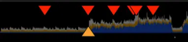
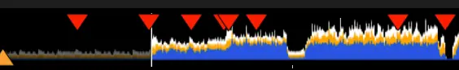

- 2025-11-13
- The DJing software synced to my spotify account and immediately pulled in my entire library, so good!!
- So I’ve been playing around and finding songs that blend really well together
- Gonna note them here
Playlist 1 - Pop Girlies
1. “One More Time” → “Don’t Start Now” ✅
- Quiet bit in “one more time”, drop, 1:22 in one more time, blend into “did a full 180 dua lipa, 12 seconds

- 👆 when One More Time goes into that dip after the intro, switch to “Did a full 180!”
- Or, let One More Time play for longer and use the second trough:

- ~75 seconds of Daft Punk vs 45
2. “Don’t Start Now” to “Delilah (pull me out of this)” ✅
- Ok, now Delilah is ~10 BPM faster than Don’t Start Now so match them ahead of time
- Let the prechorus build, play 1 chorus, and then next time, as the prechorus ends, blend with Delilah
When Dua is like “So!”, as the pre-chorus starts (So, if you don’t wanna see meeee), I can blend in “pull me out of this”, so it’s “so! - pull me out of this”- The problem with this was it was skipping the build up from Dua entirely, so suddenly you’re in a high-energy chorus out of nowhere
- I think Delilah is kinda low energy, weirdly
3. “Delilah” to “Co-Star”
- Let the Delilah chorus play twice because it slaps?
- Then, when Delilah is about to get really quiet for an extended period, go to verse 2 of Co-Star
- Blend the volumes, requires a bit of finesse
- I think these two go together really well actually
4. “Co-Star” to “Read My Lips""
- As Co-Star has a dip, bring Read My Lips in just before the chorus
5. “Read My Lips” to “Von Dutch”
Learnings
- Hmmmm, I wonder if it’d be more efficient to make a spotify playlist first, knowing that it flows well
- I feel like One More Time → Don’t Start Now → Delilah rules and then it doesn’t work that well
Playlist 2
- Improving on playlist 1
- One More Time
- Don’t Start Now
- Delilah
- Von Dutch
Playlist 3
1. “Feather”
- I was trying to blend “Yuck” into “Feather” but it just doesn’t work for reasons I don’t have the skill to diagnose right now. I think Feather is a good opening song too, also Feather blends into Not My Fault so well that I can’t lose this combo
- Seems like a hard one to blend into? Idk if it’s because it’s too chill for yuck…
- I think it’s because the auto-marked bars are slightly off, like one beat too early? 👀
2. “Feather” to “Not My Fault”
- Yeah these too work really well
To figure out
Monopoly and Under Control are funny lol
“Feather” and “Not My Fault”, Feather at 1:12 when it goes quiet → Not MY Fault kick-in. My greatest moment yet
3 - Rock vibe
1. “Overthing It” to “This is Why”
- Rock vibe
Ways to improve
- Mixing in key
4 - Hiphop
- Squabble Up, when he goes “aaaahhh!!!” → Stronger by Kanye
- That’s quite late in Squabble up though, so I need something before Squabble Up
- FUN! by Vince Staples
- I think Squabble Up and FUN! are too similar
- Also FUN! isn’t that fun
- Unless I start with Squabble Up, go to FUN!, return to Squabble Up
- I think it’s because Squabble Up is non-stop energy, it doesn’t let up at any point
- Gumbo - Jay Rock
- Jesus is the one - Kenny Beats
- Legend - Drake - too slow…
5 - Soul
- Dang! Mac Miller & Anderson Paak
- Just a lot of Paak really innit
Blazed → Retro
Blazed → Alright? Just for the Pharrell connection?
Boy Problems (Carly)
Boy Problems → Heroes by Bowie, lmaooo, so fun
Fever → Wicked Game
Father Stretch My Hands
Vice City is amazing, amazing bass. Possibly pairs really well with Artificial Angels
Your Teeth In My Deck is very fun, into the single version of Drunk Drivers!
Wicker Chair is a very nice pause
I Can Change is of course amazing
The Less I Know The Better is of course iconic
Dead to me (Kali Uchis)
Run away with me
This Is America blended with WORLDSTAR are you kidding me dude!!!!
Maps (yeah yeah yeahs) sounds great
Wide Awake (Parquet Courts) would go well with LCD Soundsystem
Ok “New Light” has a kinda perfect drop (when he starts singing) lol
Really nice to have a folky pause, like re:stacks
Women by Angel Olsen has an awesome build
Lady Stardust (Bowie) - pretty
Quite fun to from something really angry and building, like Colossus by IDLES, to something very chill and fun like Can’t Get Over You by Joji - gear change. Also FUCK I love this song, Joji is fucking talented
And then back into something loud af like Black Skinhead
Ordinary Superstar has this awesome intro that you can high-pass filter and then BOOM transition, so fucking goooood. Just went from Jawbreaker by Injury Reserve into it
“Jesus is the one”
10-20-40 has a pretty fucking sick lead-in too
“Can’t Do” by Everything Everything
Green Light! “Can’t Get Over You” by Joji into Green Light. Similar keys too. And then Swimming Pools?
2025-11-20
Gathering the things I’m most excited about
- Vice City is amazing, amazing bass. Possibly pairs really well with Artificial Angels
- Nah I don’t think these work
- Idk I wonder if Vice City is too busy
- This Is America blended with WORLDSTAR are you kidding me dude!!!!
A tale of 2 cities and no tellin’
HOLY FUCKING SHIT I JUST DID MY FIRST EVER MASHUP BY MISTAKE
THE ~OUTROS OF “NEW LIGHT” AND “LOVE ON THE WEEKEND” blended in a really gorgeous way!!!
“what do i do with all this, what do i do with all this love that’s flowing through my veins for you” vs “love on the weekend”. Same key innit!
Gravity is also in the same key
John Mayor, could make mixes for different life eras, and e.g. a mix for ellie
Love on the Brain → Long Time
Long Time → 1539 N. Calvert
True Love Waits → Wicker Chair
—————————
Early uni
People by 1975
into Scaring the Hoes
Worldstar into Fever by Carly OMGGGGG AMAIZNG !!!
1999 Wildfire rules
OMG THAT WAS THE BEST THING I’VE DONE YET!!! I USED THE BEAT JUMP FEATURE TO MANUALLY LOOP “WE APPRECIATE POWER” AS I BLENDED IT WITH THE BUILD OF “ALBATROSS” BY FOALS, INSANELY GOOD!!!!
Destroyed by Hippie Powers vs Martin
——————
Do “popstar” by danny brown